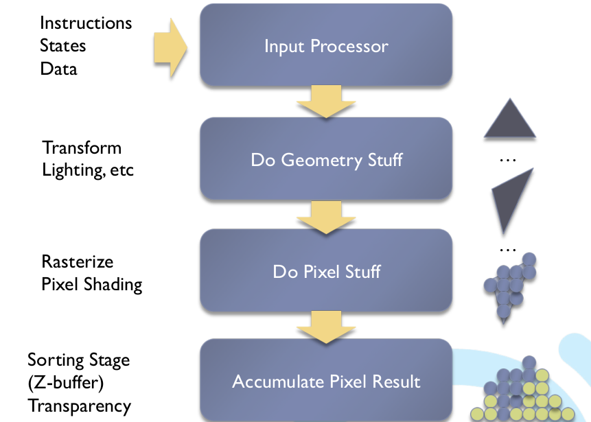
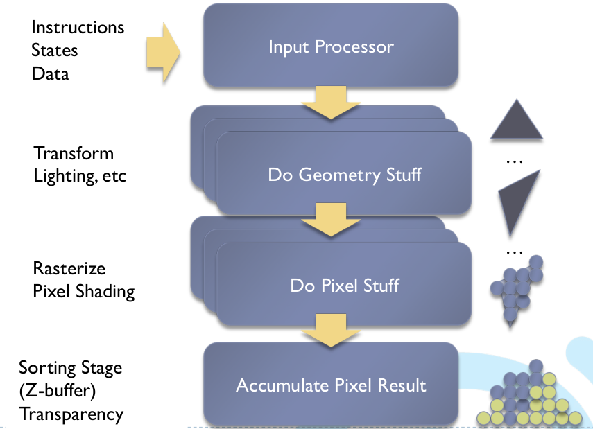

Mapping computational concepts to GPU
How GPU works
Dedicated hardware. e.g. vertex shader, pixel shader, etc
Fixed-function (same function executes many times)
Rendering pipeline
Making it faster
GPGPU
General Purpose GPU
- Unified shader unit
- And it is programmable
CPU vs GPU
Intel Nehalem (2008)

GeForce 8800 (Tesla architecure) (2007 ?)
Nvidia Pascal P100 (state of the art)
4 fast cores vs 3584 slow cores
CPU is the sports car and GPU is the city bus
GPU has very high throughput (flops)
flops = FLoating Operations Per Second
More about GPU
P100 Block Diagram
P100 SM
SM = Streaming Multiprocessor
SIMT = Single Instruction Multiple Thread
Warp = 32 threads executes in the same time
Data Parallel is good (Why ? "Eating philosopher problem")